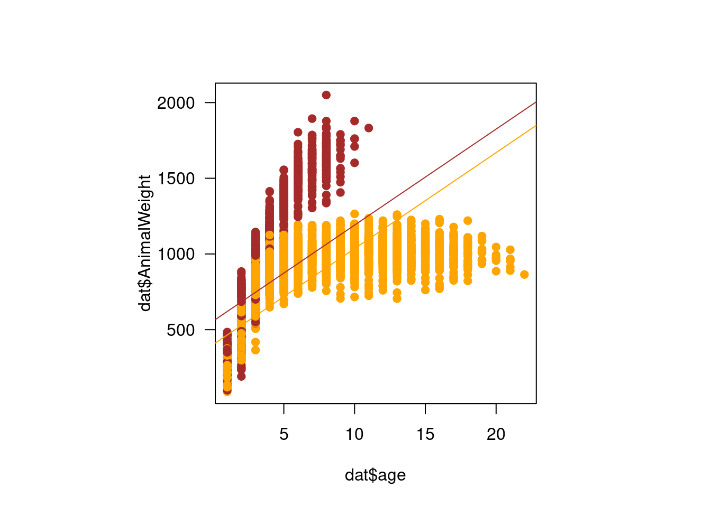

7 Linear models II
The dataset we will be using in class today is the same as last week: weight of American Bison. When watching the video, pay careful attention specifically to the size (and approximate weight) of bison of different ages and different sexes, and anything that might affect an individual’s weight.
First, let’s fit the linear model from the homework assignment.
## DataCode RecType RecYear RecMonth RecDay AnimalCode AnimalSex AnimalWeight
## 1 CBH01 2 1994 11 8 813 F 890
## 2 CBH01 2 1994 11 8 834 F 1074
## 3 CBH01 2 1994 11 8 B-301 F 1060
## 4 CBH01 2 1994 11 8 B-402 F 989
## 5 CBH01 2 1994 11 8 B-403 F 1062
## 6 CBH01 2 1994 11 8 B-502 F 978
## AnimalYOB
## 1 1981
## 2 1983
## 3 1983
## 4 1984
## 5 1984
## 6 1985## 'data.frame': 8325 obs. of 9 variables:
## $ DataCode : chr "CBH01" "CBH01" "CBH01" "CBH01" ...
## $ RecType : int 2 2 2 2 2 2 2 2 2 2 ...
## $ RecYear : int 1994 1994 1994 1994 1994 1994 1994 1994 1994 1994 ...
## $ RecMonth : int 11 11 11 11 11 11 11 11 11 11 ...
## $ RecDay : int 8 8 8 8 8 8 8 8 8 8 ...
## $ AnimalCode : chr "813" "834" "B-301" "B-402" ...
## $ AnimalSex : chr "F" "F" "F" "F" ...
## $ AnimalWeight: chr "890" "1074" "1060" "989" ...
## $ AnimalYOB : int 1981 1983 1983 1984 1984 1985 1985 1985 1986 1986 ...## Warning: NAs introduced by coercion# create a new variable called age
# age is the year the animal's weight was recorded, minus their year of birth
dat$age <- dat$RecYear - dat$AnimalYOB + 1
# subset your data.frame to remove rows with missing weight or age values
dat <- dat[!is.na(dat$AnimalWeight),]
# subset your data.frame to only include male bison
m.dat <- dat[dat$AnimalSex=="M",]
# Plot the weight over age to see what we are dealing with
plot(m.dat$AnimalWeight ~ m.dat$age, pch=20)# fit a linear model of animal weight in response to age
mod1 <- lm(AnimalWeight ~ age, data=m.dat)
par(mfrow=c(2,2))
plot(mod1)par(mfrow=c(1,1))
xvals <- (seq(0, 22, by=0.1))
p1 <- predict(mod1, newdata=data.frame(age=xvals), se.fit=T)
# Plot the raw data points
par(pty="s")
plot(m.dat$AnimalWeight ~ m.dat$age,
pch=19, cex=0.5, las=1,
col="#00000088",
ylab="Weight", xlab="Age",
axes=F)
axis(1); axis(2)
# Add the line of best fit from the model
lines(p1$fit ~ xvals, add=T)## Warning in plot.xy(xy.coords(x, y), type = type, ...): "add" is not a graphical
## parameter#abline(mod1)
# Add a polygon showing the 95% confidence interval around the line
ci.up <- p1$fit + 1.96*p1$se.fit
ci.low <- p1$fit - 1.96*p1$se.fit
polygon(x=c(xvals, rev(xvals)),
y=c(ci.up, rev(ci.low)),
col="#ff992188",
border=F)7.1 Multiple predictors
For last week’s assignment, you fit a simple linear model with a single predictor (age) and a single response variable (male bison weight). i.e. we fit this model:
\[weight \sim Norm(\mu_i, \sigma) \\ \mu_i = \beta_0 + \beta_{age} * age_i\]
But, in ecology, we often want to estimate the effects of multiple predictors at the same time. For example, what if we wanted to model the effects of age and sex on weight? \[weight \sim Norm(\mu_i, \sigma) \\ \mu_i = \beta_0 + \beta_{age} * age_i + \beta_{sex}*sex_i\]
Because, by definition, the effects in our model have to be additive, this is actually pretty straightforward. We add another regression coefficient (\(\beta\)) to go along with our extra covariate (another word for predictor that you will encounter in the literature). When fitting the model, our coefficient estimates will now be the best combination of values for all three coefficients (i.e. the intercept, \(\beta_0\), the effect of age, \(\beta_{age}\), and the effect of sex \(\beta_{sex}\)) that minimizes the sum of the squared residuals.
7.2 The Design Matrix
To understand why we get a combination of three coefficients that collectively minimize the sum of the squared residuals, rather than estimating the effect of each predictor separately, it is important to know just a little bit of matrix algebra.
The three coefficient estimates (or ‘betas’ for short) are a vector, which has only one dimension and all elements are of the same type (typically, numeric). You could think of it like if you only took one column from a spreadsheet. One row from a spreadsheet is also a vector in the linear algebra sense, but not in the R sense unless all the elements are the same class (i.e. if they are all numbers, but not a mix of numbers and letters).
A matrix, while still having elements of the same type (and still numbers), has two dimensions: the number of rows, and the number of columns. In ecological modeling, people typically either describe a matrix as being \(n \times p\), where \(n\) is the number of rows or number of observations and \(p\) is the number of predictors, or as being \(i \times j\) where \(i\) is the number of observations and \(j\) is the number of predictors. I tend to use \(i \times j\) because it matches how I code indices (i.e. x[i]) and because very rarely are biological concepts denoted as \(i\) or \(j\) but \(n\) often is used to describe sample sizes and \(p\) is often used for probability, so I find the code is much more readable with \(i\) and \(j\).
7.2.1 Adding matrices
Let’s say we have the following 2x3 matrices \(A\) and \(B\). To add the two matrices together, we add the matching elements from each. We can only add the matrices together if they have the same dimensionality, i.e. we could not add a 2x3 matrix to a 2x5 matrix because there will not be matching elements.
\[A = \begin{bmatrix} 2 & 4 & 3 \\ 1&6 & 8 \end{bmatrix} \\ \\ B= \begin{bmatrix} 1 & 2&3\\ 5&8&1 \end{bmatrix} \\ \\ A+B = \begin{bmatrix} (2+1) & (4+2) & (3+3)\\ (1+5) & (6+8) & (8+1) \end{bmatrix} \\ A+B = \begin{bmatrix} 3 & 6 & 6 \\ 6 & 14 & 9 \end{bmatrix}\]
We can also do matrix calculations in R.
# create matrix A
A <- matrix(data=c(2, 4, 3, 1, 6, 8),
nrow=2, ncol=3,
byrow=T # super important! default is to fill by column
)
B <- matrix(data=c(1, 2, 3, 5, 8, 1),
nrow=2, ncol=3,
byrow=T)
A+B## [,1] [,2] [,3]
## [1,] 3 6 6
## [2,] 6 14 9# what if we mad matrices with different dimensions?
C <- matrix(data=c(1, 0, 1, 1, 0, 1),
nrow=3, ncol=2, # note we now have a 3x2 matrix!
byrow=T
)
print(C)## [,1] [,2]
## [1,] 1 0
## [2,] 1 1
## [3,] 0 17.2.2 Multiplying vectors and matrices
When multiplying matrices and vectors in R, we use the %*% operator, rather than *. When multiplying a vector by a matrix, the vector needs to have the same length as the number of columns in the matrix. One thing that is perhaps counterintuitive here is that vectors are oriented like columns so the length is vertical. But, when viewed in R, they will look horizontal.
\
A = \[\begin{bmatrix} (0\times2) + (1\times4) + (0.5\times3)\\ (0\times1) + (1\times6) + (0.5\times8) \end{bmatrix}\] = \[\begin{bmatrix} 0 + 4 + 1.5\\ 0 + 6 + 4 \end{bmatrix}\] = \[\begin{bmatrix} 5.5 \\ 10 \end{bmatrix}\]$$
## [,1]
## [1,] 5.5
## [2,] 10.0This is where our Design Matrix comes in, where the number of columns needs to be equal to our number of betas, and the number of rows needs to be equal to the number of observations. Don’t forget to add a column of all 1s if you have an intercept! i.e. so that the intercept \(\beta_0\) gets multiplied by \(1\) and added in each time.
\[ \begin{bmatrix} \beta_0 \\ \beta_1 \\ \beta_2 \\ \vdots \\ \beta_j \end{bmatrix} * \begin{bmatrix} 1 & x_{1,1} & x_{1,2} & \dots & x_{1,j} \\ 1 & x_{2,1} & x_{2,2} & \dots & x_{2,j} \\ \vdots & \vdots & & \vdots \\ 1 & x_{i,1} & x_{i,2} & \dots & x_{i,j} \\\end{bmatrix} = \begin{bmatrix} \mu_1 \\ \mu_2 \\ \vdots \\ \mu_i \end{bmatrix}\]
\[ \mu_i = \beta_0*1 + \beta_1*x_{i,1} + \beta_2*x_{i,2} \dots + \beta_j*x_{i,j}\]
7.3 Additive effects
Going back to our bison example, you can probably guess how we add another predictor to our model, because it looks just like our representation of the model with equations.
# Note: we are switching back to the full dataset now, not the male subset
mod2 <- lm(AnimalWeight ~ age + AnimalSex, data=dat)Before we get to model fit, we will go over interpreting coefficient estimates for categorical variables. In our dataset, sex is coded as M or F. Behind the scenes, R has automatically dummy-coded these for you. Dummy-coding is when you represent a categorical variable as 0 or 1, so there is a new temporary ‘column’ (not really, but thinking of it like that will be helpful) in our dataset called ‘M’ and it takes the value of 1 when the sex column is M, and 0 when it does not. There is also a new temporary ‘column’ called F that scales the value of 1 when sex is F, and 0 when it is not.
When dealing with categorical variables, there always has to be a comparison level that other levels are compared to because it is incorporated into the intercept. The default in R is the first value alphabetically. Let’s look at the summary of the model to help with understanding this.
##
## Call:
## lm(formula = AnimalWeight ~ age + AnimalSex, data = dat)
##
## Residuals:
## Min 1Q Median 3Q Max
## -932.26 -175.33 -8.67 159.25 986.16
##
## Coefficients:
## Estimate Std. Error t value Pr(>|t|)
## (Intercept) 401.0841 5.2817 75.94 <2e-16 ***
## age 63.4171 0.7234 87.67 <2e-16 ***
## AnimalSexM 155.4143 5.9896 25.95 <2e-16 ***
## ---
## Signif. codes: 0 '***' 0.001 '**' 0.01 '*' 0.05 '.' 0.1 ' ' 1
##
## Residual standard error: 244 on 8070 degrees of freedom
## (251 observations deleted due to missingness)
## Multiple R-squared: 0.4887, Adjusted R-squared: 0.4885
## F-statistic: 3856 on 2 and 8070 DF, p-value: < 2.2e-16We have a coefficient estimate for the intercept, for age, and for sex = M. There is no coefficient estimate for sex = F. That’s because the intercept now represents the predicted weight for a female bison at age 0. The coefficient estimate for sex = M of 155 represents the difference in the intercept for a male bison still at age 0, i.e. it shifts the entire line up the y-axis by 155.
As a side note that does not apply to this model but will come up in the future: if you have multiple categorical variables, the intercept is the comparison level for all of them. i.e. if we also had bison color morphs that were aqua and chartreuse, the intercept would be the predicted weight for an aqua-colored female bison at age 0 (because aqua alphabetically comes first). You can change what the comparison level is by converting categorical variables into factors with
factorand usingrelevelto specify the order.
Let’s plot the predictions from the model to help with understanding the different coefficient estimates by visualizing the model (we will come back to model fit later!). Now, one obnoxious thing about plotting models fit with dummy variables, is that to predict new values, we need to be able to pass in a 0 or 1.
So, let’s actually refit our model but change our input data to make predictions easier.
dat$sex <- as.numeric(dat$AnimalSex=="M")
mod3 <- lm(AnimalWeight ~ age + sex, data=dat)
x.vals <- seq(0, 2100, 1)
f.wts <- predict(mod3, newdata =data.frame(age=x.vals,
sex=0
))
m.wts <- predict(mod3, newdata=data.frame(age=x.vals,
sex=1))
# plot our raw data
par(pty="s", las=1)
plot(dat$AnimalWeight ~ dat$age,
col=c("orange", "brown")[factor(dat$sex)],
pch=19)
lines(f.wts ~ x.vals, col="orange")
lines(m.wts ~ x.vals, col="brown") # note the difference in intercept
Okay, so I think we can all agree something seems very off about our model. We don’t even need diagnostic plots to know this is not a good representation of our data. In reality, animals do not continue to grow at at the same rate with age (though many fish do have indeterminate growth), and weight will eventually plateau.

Remember that a linear model does not have to be a straight line! Any linear function of x will do. In this case, we want something that will reach a horizontal asymptote. \(x^{1/2}\) should do the trick here. If you’re not sure what linear form of x to use, I recommend setting up a range of x-values from -4 to 4, increasing in increments of 0.1 and then plotting y as different functions of x.
To model weight as a function of the square root of age and sex, we will first create a new variable consisting of the square root of age, and then refit the model with this as a covariate.
##
## Call:
## lm(formula = AnimalWeight ~ age.sq + sex, data = dat)
##
## Residuals:
## Min 1Q Median 3Q Max
## -747.60 -135.64 -11.15 123.36 888.83
##
## Coefficients:
## Estimate Std. Error t value Pr(>|t|)
## (Intercept) 19.769 6.663 2.967 0.00302 **
## age.sq 339.379 2.788 121.712 < 2e-16 ***
## sex 181.493 4.965 36.556 < 2e-16 ***
## ---
## Signif. codes: 0 '***' 0.001 '**' 0.01 '*' 0.05 '.' 0.1 ' ' 1
##
## Residual standard error: 202.5 on 8070 degrees of freedom
## (251 observations deleted due to missingness)
## Multiple R-squared: 0.6479, Adjusted R-squared: 0.6478
## F-statistic: 7426 on 2 and 8070 DF, p-value: < 2.2e-16x.vals <- seq(1, 20, 0.1)
# Note that these have to be converted similarly to be interpretable!
f.pred <- predict(mod4, newdata=data.frame(age.sq=x.vals^{1/2},
sex=0))
m.pred <- predict(mod4, newdata=data.frame(age.sq=x.vals^{1/2},
sex=1))
par(pty="s", las=1)
plot(dat$AnimalWeight ~ dat$age,
col=c("orange", "brown")[factor(dat$sex)],
pch=19)
lines(f.pred ~ x.vals, col="orange")
lines(m.pred ~ x.vals, col="brown")
This is closer, but we still aren’t capturing that there is a rapid increase at the beginning followed by a tapering off and that the slopes are really different for male and female bison. We can model this with an interaction between our categorical predictor (sex) and our continuous predictor (the square root of age).
##
## Call:
## lm(formula = AnimalWeight ~ age.sq + sex + age.sq * sex, data = dat)
##
## Residuals:
## Min 1Q Median 3Q Max
## -759.29 -92.79 5.50 93.48 482.48
##
## Coefficients:
## Estimate Std. Error t value Pr(>|t|)
## (Intercept) 194.120 4.738 40.97 <2e-16 ***
## age.sq 258.670 2.011 128.60 <2e-16 ***
## sex -665.221 8.965 -74.20 <2e-16 ***
## age.sq:sex 516.795 5.090 101.53 <2e-16 ***
## ---
## Signif. codes: 0 '***' 0.001 '**' 0.01 '*' 0.05 '.' 0.1 ' ' 1
##
## Residual standard error: 134.2 on 8069 degrees of freedom
## (251 observations deleted due to missingness)
## Multiple R-squared: 0.8454, Adjusted R-squared: 0.8454
## F-statistic: 1.471e+04 on 3 and 8069 DF, p-value: < 2.2e-16x.vals <- seq(0, 20, 0.1)
pred.f2 <- predict(mod.int, newdata=data.frame(age.sq=x.vals^{1/2},
sex=0))
pred.m2 <- predict(mod.int, newdata=data.frame(age.sq=x.vals^{1/2},
sex=1))
par(pty="s", las=1)
plot(dat$AnimalWeight ~ dat$age,
col=c("orange", "brown")[factor(dat$sex)],
pch=19)
lines(pred.f2 ~ x.vals, col="orange")
lines(pred.m2 ~ x.vals, col="brown")